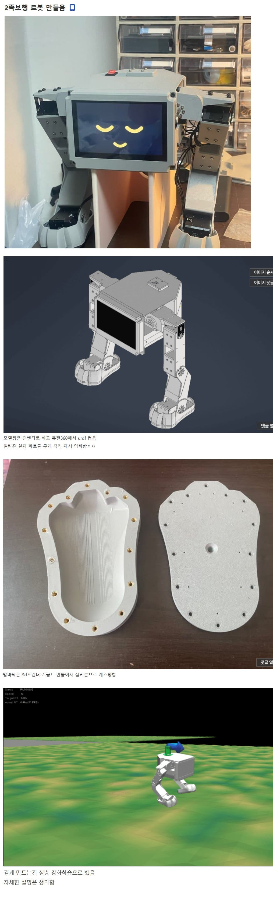

아무일도 안일어나지만 ai와 대학원생의 뇌를 힘께 갈아넣는다면 초파리 뉴런으로 이족보행이 가능할지도
개인이 이족보행 로봇을 만드는 시대가 왔구나 ㅋㅋㅋ 아시모 땐 이족보행만으로도 대단한 거였는데 ㅋㅋㅋ
그러게 아시모가 달팽이 기어가는 속도로 찔끔 걷는거 시연하면서 방송국 카메라랑 신문 기자들 쫙깔리는거 기억나는데 진짜 세상이 바뀌긴 한듯ㅋㅋ
꼭 크룩스 신고다니는거같네 ㅋㅋㅋ
이게 모니
귀여워
와 멕워리어
귀엽네 ㅋㅋ
귀엽다 ㅋㅋ
와 저스티스
근데 로봇디자인이 신기한게
저상태에서 안정성챙기려면 딱 스타워즈 깡통처럼
뒤로 눕히고 다리 하나더달고 바퀴달면 정말 안정적일것같음
그래서 그런 r2d2같은게 나오나싶다
이런 사람이 다스베이더나 아무로 레이 되는거임?
아니오(정색) 치킨집 사장님이 됩니다.
그 스타워즈 머시기의 역습 거기에 나오는거 같이 생겼네
그 키큰 수인이 주인공인 편ㅋㅋㅋ
멕워리어
귀엽네 ㅋㅋ
귀엽다 ㅋㅋㅋㅋ
나 이거 로보캅에서 본거 같음
케이?
오픈덕미니 베이스랑 비슷하네.. 토들러봇 같은 이족보행 휴머노이드도 도면은 공개되어 있는데 부품가격이 비싸서 망설여지기도 함. 요즘은 완성형 휴머노이드도 교육용 수준이면 400이면 중국산 살수 있어서.. 참 개인들이 이렇게 로봇도 인쇄해서 만들고 무서운 세상이야 ㅋㅋ
밀쳤을때 짜증내는 표정으로 바뀌면 맛도리일거같네
내반슬은 의도한거임?
골리앗 온라인
하반신봇
대단하다!
이제 초파리 뉴런을 때려박으면